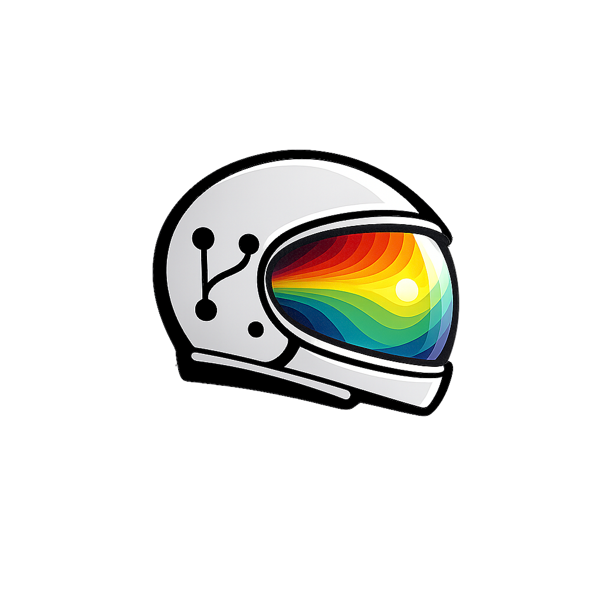
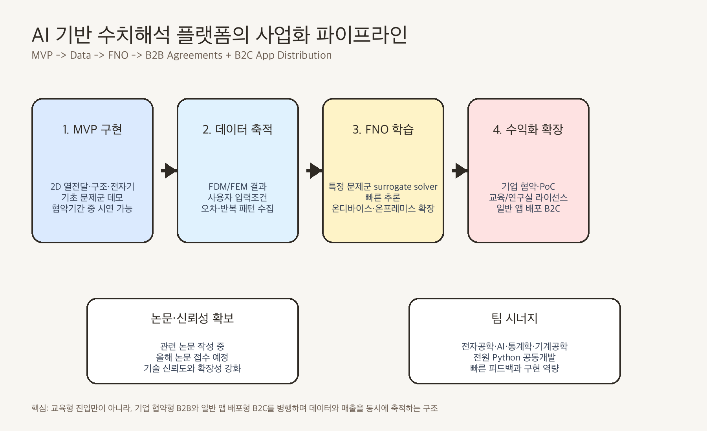
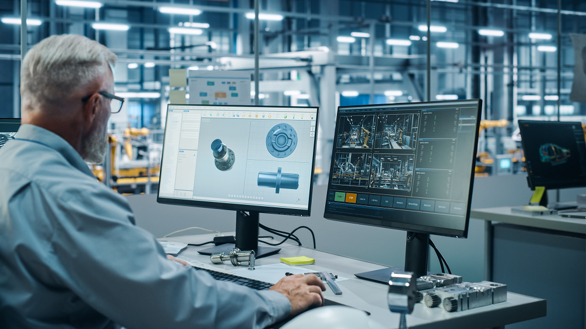
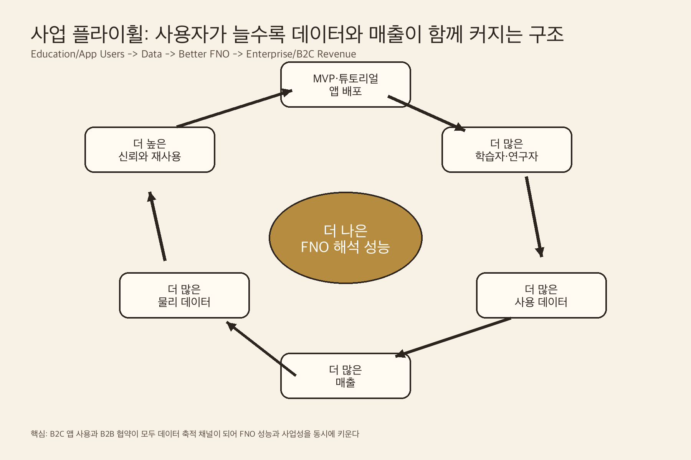

Q1. 이 아이디어를 떠올린 배경은 무엇인가요?
기존 수치해석 도구는 산업 현장에서 필수적이지만, 학생·초급 연구자·스타트업·중소기업이 쓰기에는 비용과 학습 장벽이 높습니다. 상용 CAE 소프트웨어는 강력하지만 비싸고 복잡하며, 오픈소스 해석도구는 접근성은 좋아도 실무형 UX와 교육 흐름이 부족합니다. 실제 기업은 설계 검토, 해석 의뢰, 재수정, 재계산을 반복하며 많은 시간과 비용을 쓰고 있지만, 모든 설계안을 실험으로 검증할 수는 없습니다. NumPilot은 이 간극을 해결하기 위해 교육형 진입과 실사용 데이터 축적을 결합한 AI 수치해석 플랫폼을 목표로 합니다.
Q2. 누구의 어떤 문제를 해결하고자 하나요?
NumPilot이 해결하려는 문제는 해석이 필요한 사람과 해석 도구 사이의 거리입니다. 공학을 배우는 학생은 수식과 코드가 어렵고, 연구실은 반복 실험과 파라미터 변경에 많은 시간을 쓰며, 산업체 개발자는 빠르게 아이디어를 검증하고 싶어도 전문 해석 인력이나 고가 도구가 필요합니다. NumPilot은 FDM·FEM 기반 전통 수치해석과 Fourier Neural Operator를 결합해, 사용자가 문제 조건·경계조건·재료 특성·형상 조건을 입력하고 결과를 시각적으로 확인할 수 있게 합니다. 초기에는 학습자와 연구실을 대상으로 시작하지만, 장기적으로는 반복 해석이 필요한 산업 현장의 일반 개발자까지 확장할 수 있습니다.
Q3. 이 아이디어를 어떻게 실현하고 싶으신가요?
NumPilot의 성장 전략은 교육형 진입에서 시작해 B2C 앱 배포와 B2B PoC를 병행하는 구조입니다. 1단계에서는 교육용 웹·앱 데모, 튜토리얼, 교재, 예제 문제 패키지를 통해 전자공학·기계공학 학습자, 초급 연구자, 교수자, 해석 입문자를 확보합니다. 이 단계의 핵심 가치는 쉽게 이해되는 수치해석 경험입니다. 앱 안에서는 칩 발열, 냉각판, 배터리 셀, 수업 예제와 같은 시나리오를 통해 FDM, PINN Lite, FNO Preview의 차이를 시각적으로 보여줄 수 있습니다. 2단계에서는 대학 연구실과 기업을 대상으로 제한적 문제군 PoC를 제안합니다. 반복 계산이 많은 열전달, 구조, 전자기 문제를 중심으로 해석보조 툴, 맞춤형 모델, 교육기관 라이선스를 제공하고, 실제 산업·연구 현장의 요구를 수집합니다. 이 과정에서 얻는 문제 유형과 해석 데이터는 플랫폼의 핵심 자산이 됩니다. 3단계에서는 충분한 데이터와 검증 결과를 바탕으로 FNO 기반 구독형 해석 서비스, API, 기업용 라이선스, 온프레미스 배포로 확장합니다. 기업은 설계 데이터를 외부 공개 서버에 올리기 어렵기 때문에 내부 환경에서 빠르게 반복 계산할 수 있는 AI 해석 도구에 대한 수요가 큽니다. NumPilot은 교육 콘텐츠로 사용자를 모으고, 사용자 실습과 해석 데이터를 축적하며, 그 데이터로 AI 모델을 고도화하고, 고도화된 성능으로 다시 유료 고객과 기업 협약을 확대하는 플라이휠을 만듭니다.
Q4. 제출 이미지 구성은 어떻게 되나요?
이미지는 문제 배경, 시장 기회, 제품 구조, 기술 전환, 성장 플라이휠이 한 흐름으로 읽히도록 구성합니다. 먼저 브랜드와 문제 인식을 보여주고, 이어서 교육형 데모에서 데이터 축적과 AI 해석 모델로 연결되는 구조를 보여줍니다. 마지막 이미지는 교육 콘텐츠, 사용자 유입, 해석 데이터, FNO 성능 향상, PoC와 구독 매출이 순환하는 사업 구조를 설명합니다.



